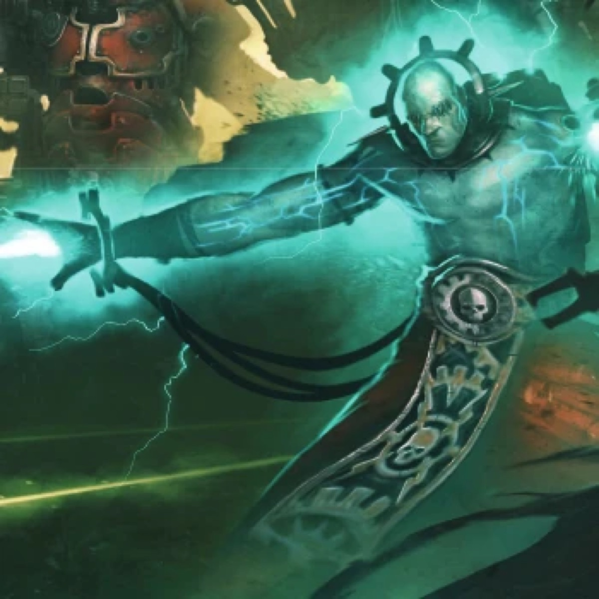

Nova Terra Interregnum
| Nova Terra Interregnum | |
|---|---|
| Also called the Time of Twin Empires | |
 A tech-priest of the schismatic forges, from a Martian chronicle of the Moirae Schism | |
| Date | Early M35 to 975.M35 |
| Location | Segmentum Pacificus and the western reaches of the Imperium of Mankind; the forge worlds of the Adeptus Mechanicus |
| Result | The Ur-Council of Nova Terra overthrown in the Cataclysm of Souls; the rule of the High Lords of Terra restored; the power of the Ecclesiarchy raised to its height |
| Belligerents | |
| High Lords of Terra | Ur-Council of Nova Terra |
| Commanders and leaders | |
| (POW) Captured | |
| Strength | |
| Casualties and losses | |
| Dozens of companies lost in the Moirae Schism; billions dead in the religious wars of the Cataclysm of Souls | The Ur-Council overthrown by its own peoples in 975.M35; Tellarite Land Leviathans lost to the Imperial Army, which kept their design; Hrakon taken to The Rock |
| Scores of worlds swept by the Pale Wasting; whole sectors killed by the nightmare engines of the Cataclysm of Souls | |
| Notable events | |
| The Pale Wasting; the Moirae Schism; the Tellarite Rebellion; the Hrakon Campaign; the Cataclysm of Souls | |
The Nova Terra Interregnum, known to the schismatic worlds as the Time of Twin Empires, was the period of nearly nine centuries, from the early 35th millennium to 975.M35, during which the Imperium was in practice two states. In the east and the centre the High Lords of Terra governed as before. In the west, the Ur-Council of the world of Nova Terra repudiated their authority and claimed the worlds of the Segmentum Pacificus for itself.[1]
The rivalry of the two courts was only part of the trouble. During the same centuries the Adeptus Mechanicus was torn by a heresy that began on the forge world of Moirae, the Imperium's frontier was struck by a plague from the Ghoul Stars that has never been fully explained, and a series of lesser rebellions took advantage of Terra's weakness. The Interregnum ended with the Cataclysm of Souls in 975.M35, when the Ecclesiarchy moved to bind the Imperium into one theocratic state, the peoples of the Pacificus rose against their own council, and the High Lords were restored. The price was the Ecclesiarchy's new power, which led directly to the Age of Apostasy.[1][2]
The records of the period are poor. Most of what the Administratum holds was compiled after the Cataclysm, by officials who had reason to portray the Ur-Council as simple rebels, and the Inquisition, the Mechanicus and several Space Marine Chapters have sealed their own accounts.
Background
[edit]The Imperium of the 34th millennium was a federation of sectors held together by the Senatorum Imperialis and the great adepta. It had no means of ruling so large an area in detail and relied on the sector governors and Chapter masters to act on their own judgement. The strain this placed on its communications was constant. A planetary governor on the western rim might wait many standard years for an answer from Terra, and in practice acted without one.[1]
Nova Terra, a populous and wealthy world of the Segmentum Pacificus, had grown during these centuries into the effective capital of the west. Its rulers were a body of sector lords, merchant houses and the heads of the local Administratum, who met as a council in its capital and, by the early 35th millennium, called themselves the Ur-Council. The council was composed of men and women who had no wish to see their sector governed from Terra by officials who did not know it, and who had grown used to deciding its affairs themselves. Imperial records do not state the exact date of their declaration. The earliest datable act of the council is the Dark Angels' raid of 257.M35, when it was already acting as a government.[1][3]
The Twin Empires
[edit]The Ur-Council
[edit]The Ur-Council did not call itself a rebel. It claimed to be the lawful government of the western worlds in the absence of Terra's effective authority and kept the forms of the Imperium: it collected tithes, raised Planetary Defence Forces, upheld the Imperial Creed and prayed for the Emperor. What it denied was the right of the Senatorum Imperialis to command it. Terra's answer was military and diplomatic by turns. Imperial Army regiments were sent to the border worlds, and the Ministorum's preachers, who were permitted in the west, were instructed to remind the faithful that the Emperor's will was one.[1]
For most of the following centuries there was an uneasy border war, with raids, sieges and local armistices, and with the main Space Marine Chapters, unwilling to take sides, protecting their own worlds. The Segmentum Pacificus became a theatre of low-grade civil war, in which sector fleets of the two courts met without ever fighting a single decisive action.[1]
The Hunt for Cypher
[edit]Among the few forces that crossed the border freely were the Dark Angels. In 257.M35 the Chapter's Inner Circle, following a trail of evidence about a figure known to it as Cypher, came to believe that at least one member of the Ur-Council was a Fallen Angel. A Ravenwing strike on Nova Terra found no prisoners. A second line of inquiry brought the Chapter, in 495.M35, to the Hrakon Campaign. The Dark Angels hunted down Obidiah Hrakon, the despot ruler of a world that had been important to the Ur-Council's support, in the Veiled Region, where he had taken refuge on a corsair port. The Deathwing teleported down in sequence and killed everything on the world but Hrakon, a former Standard Bearer of the I Legion, who was taken to The Rock to face the Chapter's Interrogator-Chaplains. His death was not an easy one. Imperial scholars note that the Chapter's own accounts of the campaign are guarded and that its true purpose was not the Interregnum.[3]
Life under two courts
[edit]For the people of the Pacificus the Interregnum was less a war than a long uncertainty. The tithe went to Nova Terra and not to Terra, and the astropathic choirs of the west, cut off from the Adeptus Astra Telepathica's central offices, were reorganised under the Ur-Council's own officials. Travel between the two halves of the Imperium required the permission of both courts, and merchants who crossed the border learned to carry two sets of seals. Pilgrims were the one class of traveller whom neither side dared to stop, and the Ministorum, which could pass the border at will, used the fact to build its influence in the west. This was to matter in 975.M35.[1]
Wars within the adepta
[edit]The Pale Wasting
[edit]In the 34th millennium, in the years before the Ur-Council's declaration but remembered as part of the same age of troubles, the Imperium was struck by a catastrophe from the Ghoul Stars. The surviving fragments of record speak of a star-spawned plague that swept away scores of worlds, and of nightmare engines that killed the populations of whole sectors. The sources are censored or deliberately destroyed. Those pieces that remain suggest that the threat was xenos in origin and that more than one Space Marine Chapter was wiped out in the course of the fighting.[4]
The Novamarines took part in the campaign that ended it, and a stele in the Imperial Palace on Terra thanks them for having unmade "that which cannot die". It is among the Chapter's oldest battle honours, yet the Chapter's own chronicles are empty of any mention of it. The Death Spectres still keep watch over the Ghoul Stars to see that the inhabitants never again threaten the galaxy.[4]
The Moirae Schism
[edit]In the 35th millennium the Mechanicus was divided by the Moirae Schism. The heresy began on the minor forge world of Moirae, where a triad of tech-mystics, enshrined in the forge's data-looms, claimed to have found a predictive pattern in the minute fluctuations of the Astronomican. They believed that the signal foretold an age in which the Cult Mechanicus and the Ecclesiarchy would be one creed, held by the whole Imperium. Neither body would tolerate the notion, and the Martian priesthood declared the Moirate doctrine a heresy.[5]
The Mechanicus split. The Martian orthodoxy destroyed Moirae with an Exterminatus, but not before the doctrine had spread to other forges, to Titan Legions and to the Space Marine Chapters that were tied to the Mechanicus. Dozens of companies were lost in the fighting. Several clan companies of the Iron Hands were excommunicated for adhering to the heresy, and were reconstituted as the Sons of Medusa. The Mechanicus's records say that it took more than two thousand standard years to purge the Moirate doctrine.[5]
The Tellarite Rebellion
[edit]Elsewhere the weakness of the central government encouraged smaller revolts. The most notable was the Tellarite Rebellion, in which Tellarite forces carved out a pocket empire for themselves in the late 35th millennium. In their battles with the Imperial Army the Tellarites used great armoured vehicles known as Land Leviathans, whose design the Astra Militarum later adapted for its Praetor Armoured Assault Launcher.[1]
The Cataclysm of Souls
[edit]By the 10th century of M35 the Ecclesiarchy was the best organised institution in the Imperium. Its priests were in every parish, in the west as in the east, and it alone could claim to speak for both of the Imperium's courts. In 975.M35 it moved to use this position. It began to rebind the sundered Imperium as a theocratic state that stood above the quarrels of politics, and demanded that the Ur-Council accept its rule.[2]
The Ur-Council refused, and denied the Ecclesiarchy's right to command it. The Ecclesiarchy denounced the councillors as heretics who defied the will of the God-Emperor, and the population of the Segmentum Pacificus, which was devout, rose against its rulers. Billions died in the religious wars that followed, the worst civil strife since the Heresy. The Ur-Council was overthrown, the Pacificus was reintegrated and the High Lords' authority was restored over the whole Imperium.[2]
Legacy
[edit]The reunion was not a return to what had been. The Ecclesiarchy emerged from the Cataclysm with a political power that it had not held before, and used it. The tension between the state church and the Administratum, which the High Lords had held in check by the existence of a rival court, was released, and within a few centuries it produced the Age of Apostasy and the Reign of Blood of Goge Vandire.[2]
The Interregnum also left lasting scars on the adepta. The Mechanicus's long war against the Moirate doctrine made it more suspicious of prophecy and of the Astronomican's workings, and the Iron Hands and the Sons of Medusa have never reconciled. The Imperial Army kept the design of the Land Leviathan. In the Segmentum Pacificus, the people of Nova Terra still remember the Ur-Council with a mixture of pride and shame.[5]
Timeline
[edit]Dated events of the Interregnum. See also 35th millennium.
| Date | Event |
|---|---|
| Late M34 | Unrest in the Segmentum Pacificus; some sector records date the division to 401.M34. |
| Early M35 | Warp storms rise across the Imperium; the Ur-Council of Nova Terra repudiates the High Lords of Terra. |
| M35 | The Moirae Schism divides the Adeptus Mechanicus. |
| 200.M35 | Ecclesiarch Benedin IV moves the Holy Synod to Ophelia VII. |
| 257.M35 | The Dark Angels raid Nova Terra, the council's earliest datable act. |
| 495.M35 | The Hrakon Campaign of the Dark Angels. |
| 500.M35 | Ecclesiarch Greigor XI declares the Synod's return to Terra. |
| 500–605.M35 | Saint Sabbat's crusade wins the Sabbat Worlds. |
| 975.M35 | The Cataclysm of Souls ends the Interregnum; the High Lords restored. |
| 980.M35 | The Hrud Rising. |
| 991.M35 | The Cursed Founding. |
See also
[edit]References
[edit]- ^ a b c d e f g h Codex Imperialis (rev. 980.M41). Adeptus Terra. Chapter on the Nova Terra Interregnum.
- ^ a b c d Liber Ecclesiasticus (M37). Adeptus Ministorum. Chapter on the Cataclysm of Souls.
- ^ a b Chronicle of the Ravenwing (M35, extracts). Dark Angels archive (restricted).
- ^ a b Stele of the Novamarines (M34). Imperial Palace, Terra.
- ^ a b c Canticles of the Moirae Schism (M35, revised M36). Mars.
Further reading
[edit]- Codex Imperialis (rev. 980.M41). Adeptus Terra.
- Liber Ecclesiasticus (M37). Adeptus Ministorum.